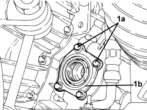
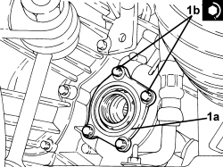

2110D52 FLANGE ON DIFFERENTIAL - R.R WITH DRIVESHAFT REMOVED
- Path
- Procedures > 21 GEARBOX UNIT > 2110 MANUAL GEARBOX WITH DIFFERENTIAL > 2110D MANUAL GEARBOX DIFFERENTIAL > 2110D52 FLANGE ON DIFFERENTIAL - R.R WITH DRIVESHAFT REMOVED
- Kind
- repair procedure (removal / refitting; the operation number is the code)
- Applies to
- engines: 1.9 JTD 8v, 1.9 JTD 16v; all production periods
- Interactive page
- https://sloeber94.github.io/elrnDB-fCrm/en/#/194002319
Applies to: engines: 1.9 JTD 8v, 1.9 JTD 16v; all production periods
 Removing
Removing
 Refitting
Refitting1. Undo the bolts (1a) and remove the left flange on the differential (1b).

Applies to: engines: 1.9 JTD 8v, 1.9 JTD 16v; all production periods
Refitting
Removing- Moisten a new shaft oil seal with transmission fluid.
1. Position the left flange in its housing in the differential (1a) and secure it tightening the bolts (1b) to the recommended torque.
Component | Fastening | dia | Value (daNm) | Validity |
|---|---|---|---|---|
Left flange on differential | Bolt | M8 | (differential side) 2.0 + 45° | 1.9 JTD 8v 1.9 JTD 16v |
